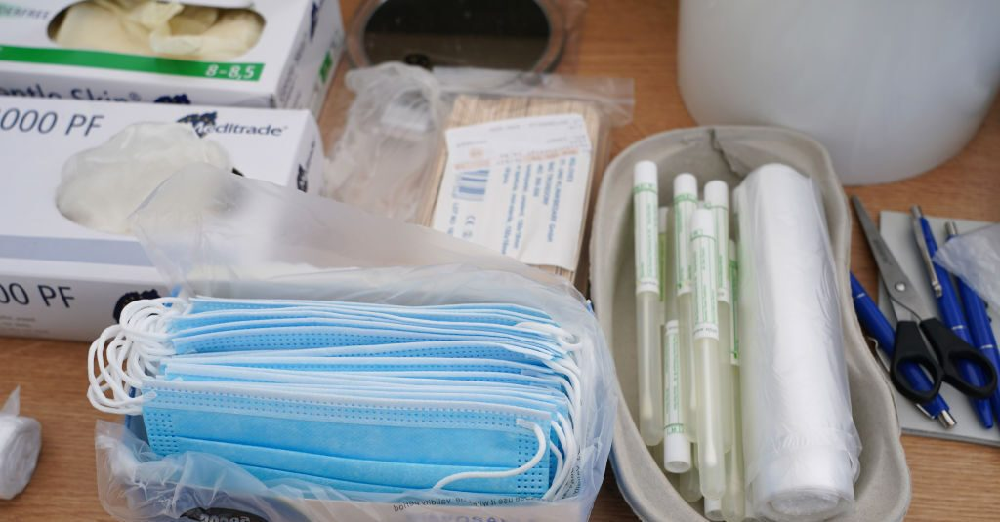
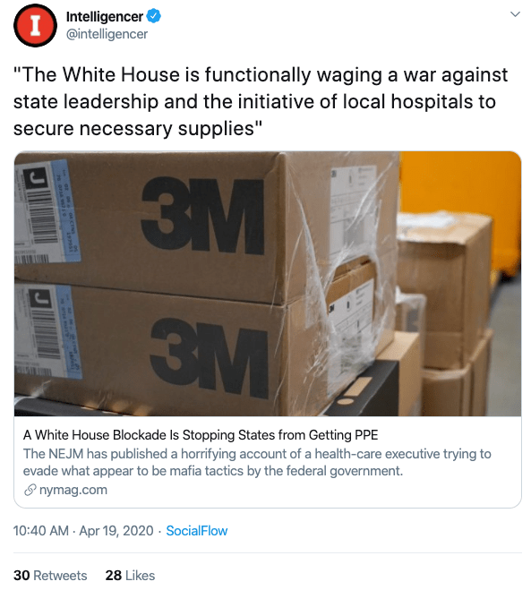

Did the Trump Admin Seize COVID-19 Protective Equipment from States?
Numerous health care officials and state leaders have reported instances in which federal authorities have intervened on local agencies' agreements with PPE vendors.In several cases, state officials reported the Federal Emergency Management Agency (FEMA) confiscated supplies within the last minute of deals with no explanation, while others reported the agency outbid them for the equipment.
As more than one year passes since COVID-19 was declared a pandemic, Snopes is still fighting an 'infodemic' of rumors and misinformation, and you can help.Find out what we’ve learned and how to inoculate yourself against COVID-19 misinformation.Read the latest fact checks about the vaccines.Submit any questionable rumors and 'advice' you encounter.Become a Founding Member to help us hire more fact-checkers.And, please, follow the CDC or WHO for guidance on protecting your community from the disease.
As the U.S. federal government and states clashed over how to respond to the COVID-19 coronavirus pandemic in spring 2020, workers on the frontlines of helping virus patients reported widespread shortages of personal protective equipment (PPE), including N95 masks and gowns.Hospital and state leaders described a chaotic and highly competitive market for securing supplies from vendors — disarray that critics of President Donald Trump blamed on his ad-hoc approach to addressing the shortfall.
Meanwhile, several news reports surfaced, claiming federal officials seized PPE shipments from local agencies or stopped the deals between vendors and states by offering higher bids.Snopes received numerous inquiries from readers about the validity of the assertion.
To get to the root of the claim, we first researched from where the news reports originated.From The New York Times to the Boston Globe to The Intelligencer (a blog within New York magazine), several media outlets highlighted the experience of Dr.Andrew W. Artenstein, an infectious disease physician in Springfield, Massachusetts, who said the pandemic has forced him into PPE supply-chain work.On April 17, 2020, he published a letter in a peer-reviewed medical journal, The New England Journal of Medicine, about his apparent travails of getting a large shipment of face masks and respirators from a warehouse in a mid-Atlantic state.(He told The New York Times he would not publicize the location of the transaction out of fear of jeopardizing his relationship with the supply vendor.)The letter read:
Before we could send the funds by wire transfer, two Federal Bureau of Investigation agents arrived, showed their badges, and started questioning me.No, this shipment was not headed for resale or the black market.The agents checked my credentials, and I tried to convince them that the shipment of PPE was bound for hospitals.After receiving my assurances and hearing about our health system’s urgent needs, the agents let the boxes of equipment be released and loaded into the trucks.But I was soon shocked to learn that the Department of Homeland Security was still considering redirecting our PPE.Only some quick calls leading to intervention by our congressional representative prevented its seizure.
It is unclear why federal officials may have targeted the Massachusetts delivery or where they would have allegedly redirected the supplies.Citing a policy of not confirming or denying specific investigations, the FBI declined to comment on Artenstein’s account in an April 20 New York Times story, saying only that the agency had been working to ensure that PPE 'is not being unlawfully distributed or hoarded' during the coronavirus pandemic.Additionally, the Boston Globe could not reach the Department of Homeland Security, which encompasses FEMA, to comment on the doctor’s story.
Though widely circulated online, Artenstein’s story was not the only report of federal interference in the procurement of PPE in spring 2020.On April 7, the Los Angeles Times reported health care officials in seven states said the federal government seized their shipments and did not give guidance on how or if the local agencies would someday get the supplies they ordered.'Are they stockpiling this stuff?Are they distributing it?We don’t know,' one unidentified official told the LA Times.'And are we going to ever get any of it back if we need supplies?It would be nice to know these things.'
Additionally, Los Angeles Mayor Eric Garcetti told The New York Times that FEMA stepped in at the last minute of a deal the city had with 'one of its usual suppliers' to buy 1 million masks; a New Jersey county official told local media an order of 35,000 N95 and other masks were 'commandeered' by the federal government; and a leader of the private health care company Kaiser Permanente told staff members that the company had found 20 million masks to purchase, 'but the feds actually seized that shipment before we were able to acquire it,' the Times reported.The same news story said:
In Massachusetts, state leaders said they had confirmed a vast order of personal protective equipment for their health workers; then the Trump administration took control of the shipments.In Kentucky, the head of a hospital system told members of Congress that his broker had pulled out of an agreement to deliver four shipments of desperately needed medical gear after the supplies were commandeered by the Federal Emergency Management Agency.Gov.Jared Polis of Colorado thought his state had secured 500 ventilators before they were 'swept up by FEMA.'
Adding to those reports are worries by Illinois Gov.J.B. Pritzker that if he publicly discusses how he’s obtaining masks and gloves for his state, federal officials may catch wind and seize the materials, according to the Chicago Sun-Times.'The supply chain has been likened to the wild West, and once you have purchased supplies, ensuring they get to the state is another herculean feat,' a spokesperson for the governor told the news outlet.
The reports began surfacing around the time the Trump administration launched a new public-private partnership to quickly distribute mass shipments of protective gear to the U.S. from factories overseas.The so-called Project Airbridge initiative (championed by Jared Kushner, the president’s son-in-law and senior adviser) came after repeated requests from the president for states to handle the supply issue themselves, allegations from some local leaders that the federal government was distributing the equipment unfairly, and Trump choosing FEMA to replace the Department of Health and Human Services as the leading agency to respond to the crisis, a move that changed how states submit formal requests for supplies from the national stockpile.
Explaining the spring 2020 initiative, FEMA said in a statement that the agency redirects roughly half of each international shipment to U.S. locations it has deemed in highest need, using COVID-19 data compiled by the Centers for Disease Control and Prevention (CDC).Simultaneously, the agency said it is sending the remainder of orders to businesses, health care facilities and counties that have placed orders in the past.
Yet despite the claims from state and hospital leaders, the federal government has not explicitly said it is confiscating or blocking PPE orders at the local level — nor explained why it would.It also has not outlined a long-range plan for the alleged intervention efforts, or how the supplies would be divvied up.FEMA officials’ response to the allegations include, in chronological order:
Given the amount of reports from state officials and health care leaders claiming that federal officials seized or blocked PPE orders, and those accounts’ level of specificity and apparent validity, we rate this claim 'Mostly True' — with the caveat that the intervention efforts appear to be a part of a broader distribution plan that purportedly aims to get supplies to regions with the most urgent needs.
Posted On: 2020-04-24T00:00:00
Posted By: Jessica Lee


Content Date: 2020-04-24
Download Date: 2021-05-30
Document ID: L0C04CN9F